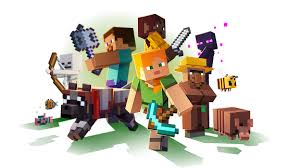

Características de Minecraft
Tipos de Juego
- Supervivencia: Recolecta recursos, fabrica herramientas y sobrevive contra monstruos
- Creativo: Construcción ilimitada con todos los recursos disponibles
- Aventura: Explora mundos con reglas personalizadas
- Espectador: Modo de observación sin interacción directa
Características del Mundo
Minecraft ofrece las siguientes características únicas:
- Mundo generado proceduralmente con diferentes biomas
- Sistema de crafteo y fabricación de herramientas
- Mecánicas de agricultura y cría de animales
Elementos Principales
- Bloques: Unidad básica de construcción
- Entidades: Jugadores, mobs y objetos que se mueven
- Redstone: Sistema de circuitos y mecanismos

Descubre un mundo infinito de posibilidades con cada característica única.